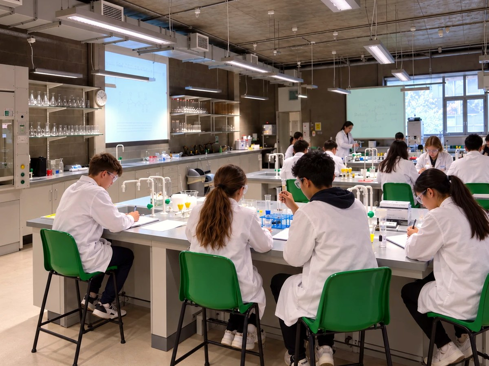
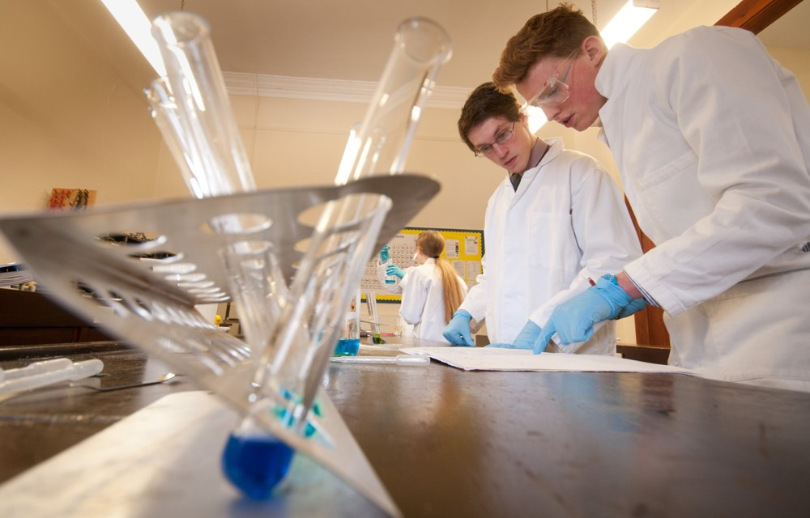
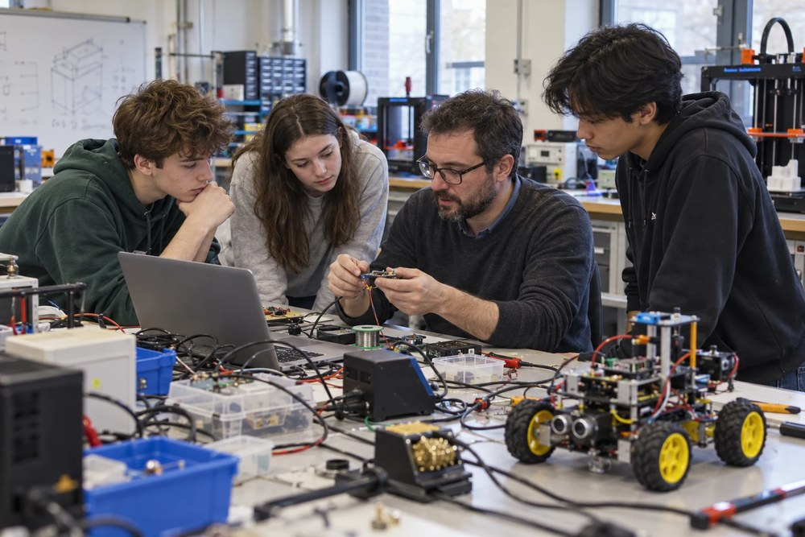
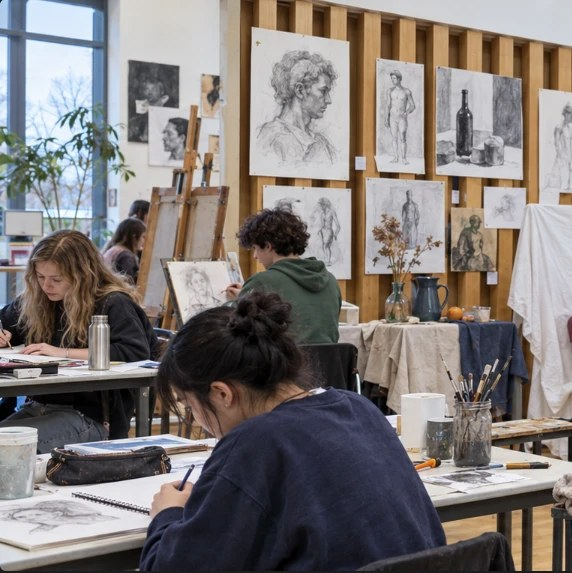
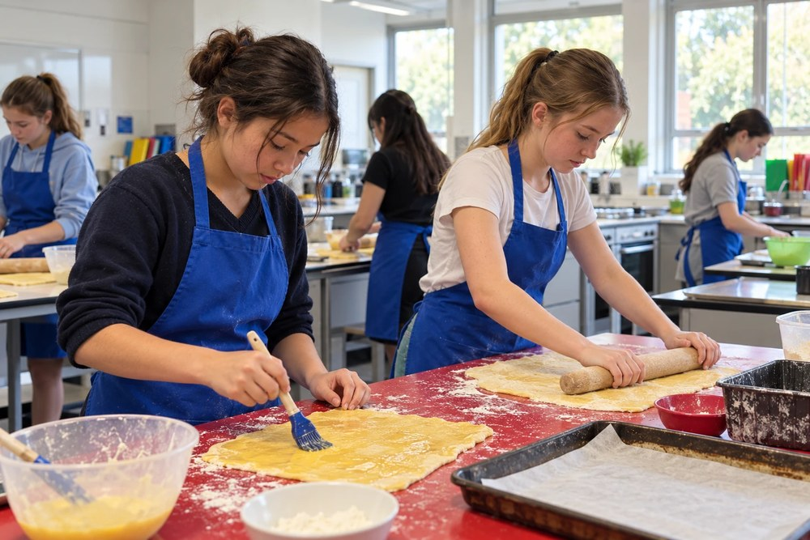

Estudiar
Aprender en otro entorno
Una educación que une teoría y práctica: se aprende participando, con laboratorios, proyectos y debates. Los colegios anglosajones cuidan el desarrollo de cada alumno para que gane conocimientos, autonomía y confianza.
Comparar destinosAprender haciendo



